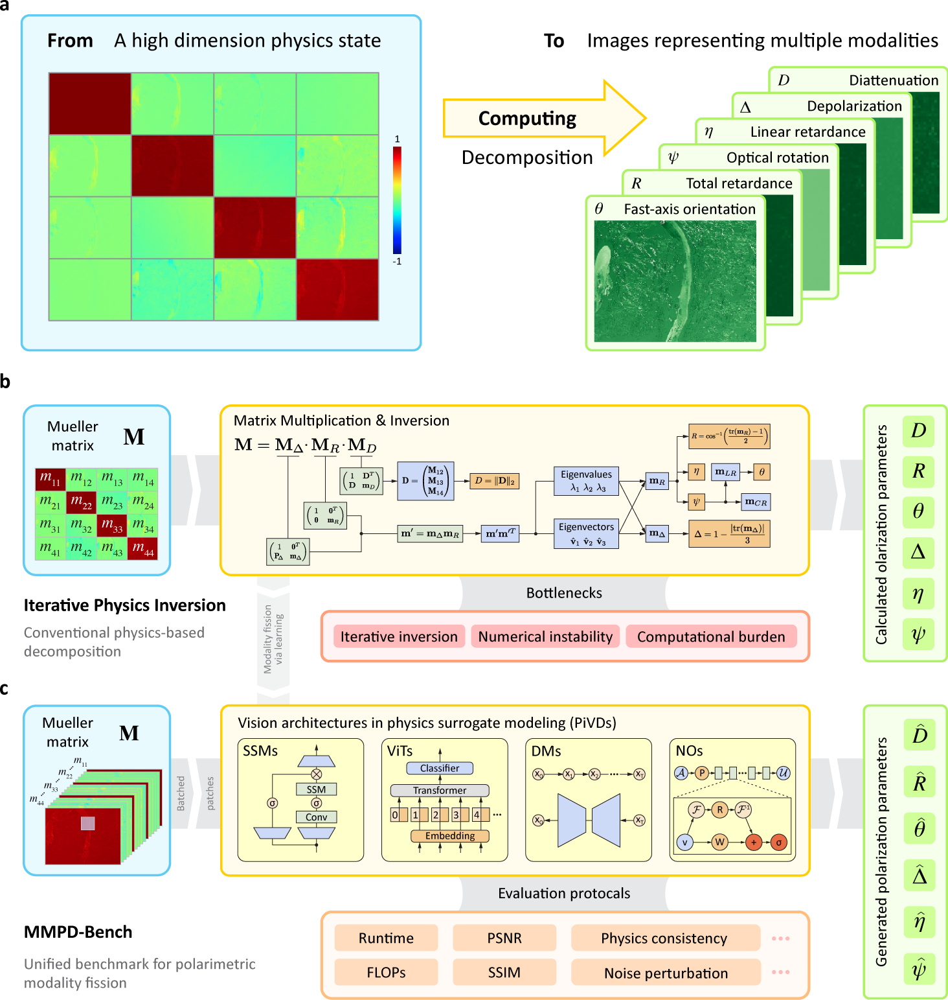
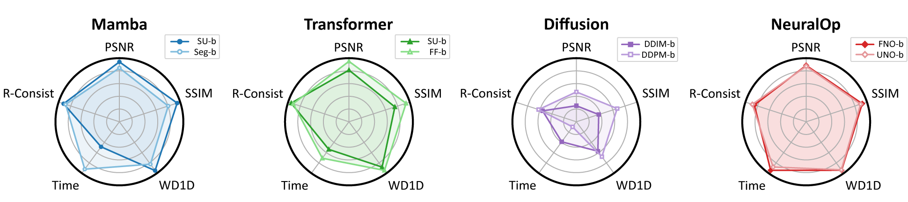
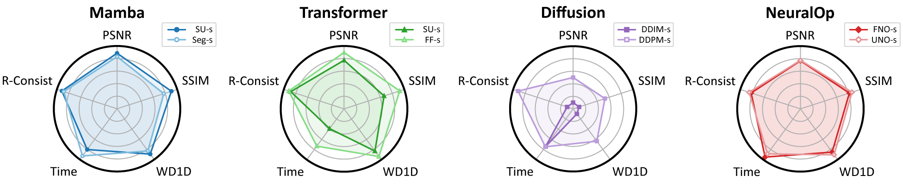
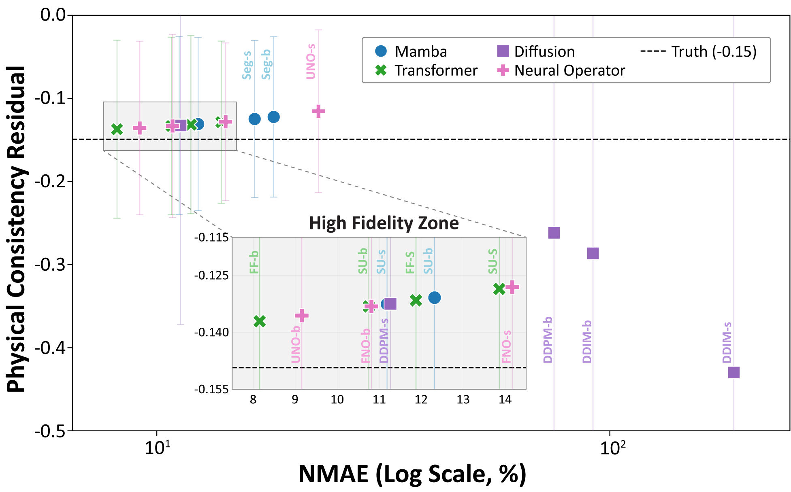
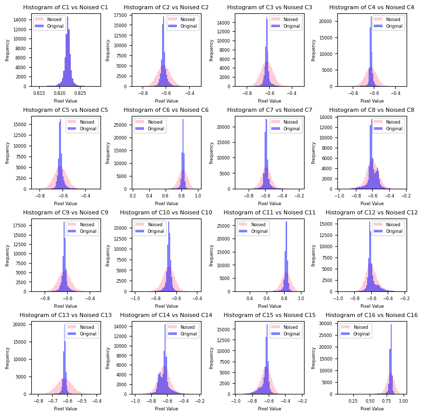

Replacing iterative numerical Mueller-matrix inversion with deep surrogate models. 21,412 real-world Mueller-matrix observations, 16 baselines spanning state-space models, vision transformers, conditional diffusion, and neural operators — evaluated under a multi-faceted protocol of fidelity, physical consistency, robustness, and efficiency.
Abstract
Recovering multiple physical parameters from high-dimensional optical measurements remains challenging in computational optics. MMPD-Bench is a pioneering benchmark that reframes multi-polarimetric modalities decomposition from Mueller-matrix observations as a modality fission problem under the multimodal learning paradigm — replacing iterative numerical inversion with deep surrogate models and providing data, standardised solutions, and evaluations for this multi-physics generation challenge.
We benchmark representative architectures — state space models, vision transformers, conditional diffusion models, and neural operators — under a multi-faceted protocol that jointly assesses perceptual fidelity, physical consistency, robustness, and computational efficiency. Our analysis reveals non-trivial accuracy–robustness trade-offs and key limitations of existing surrogates. To support reproducible research, we open-source the full codebase together with 21,412 high-resolution Mueller-matrix observations and four specialised test sets acquired through physical polarimetric measurements.
Formally defines MMPD as a modality-fission problem, bridging high-dimensional Mueller-matrix decomposition with the standardised multimodal-generation paradigm.
First adaptation of FNO & UNO to Mueller-matrix decomposition — a benchmark that spans attention, state-space, generative, and operator-learning paradigms.
High-resolution paired observations from a custom wide-field transmissive Mueller polarimeter on healthy & diseased tissue, with four external test sets (waveplate, multi-wavelength).
Transcends standard vision metrics with physical-consistency checks, scale-normalised numeric matching, and 1-D Wasserstein statistical distances — released as an open-source platform.
Method
A spatially resolved 4×4 Mueller matrix observation describes the transformation of the polarisation state under the Stokes–Mueller formalism, and is decomposed into six physically interpretable parameters — diattenuation (D), depolarisation (Δ), linear retardance (η), total retardance (R), fast-axis orientation (θ), and optical rotation (ψ). Conventional MMPD relies on physics-based numerical inversion (Lu–Chipman), which can introduce numerical instability and computational burden at large scale. MMPD-Bench reframes this process as a modality-fission problem and benchmarks deep surrogate models — state space models, vision transformers, diffusion models, and neural operators — under unified evaluations of fidelity, statistical alignment, physical consistency, robustness, and efficiency.

Benchmarks
Representative base (-b) results on the combined test set (clear Mueller-matrix observations); best model per chart is highlighted. Neural operators (FNO / UNO) and FactFormer cover the difficult angular-phase modalities (θ, ψ); deterministic surrogates lead on depolarisation (Δ); diffusion models trail across quantitative fidelity. Tables 8 & 9 in the paper report the full set of 16 model variants.
PSNR ↑ (dB) · ImageTheta
SSIM ↑ (%) · ImageDelta
WD-1d ↓ · whole test set, lower is better
Insights
Across the three task pillars — computational efficiency, modality fidelity & physical consistency, and robustness under perturbations — we identify the following load-bearing observations from 16 model variants on 21,412 Mueller-matrix samples.
Window-attention models maintain strong throughput as batch grows, while linear-complexity Mamba and FactFormer hit out-of-memory limits earlier than expected.
FNO-s and UNO-s strike the best efficiency–accuracy balance; scaling to -b variants adds cost without proportional gains, and diffusion sampling cost dominates total latency.
FactFormer, FNO, and SwinUMamba dominate quantitative metrology and physical consistency; diffusion surrogates show notable retardance-consistency residuals.
UNO-b achieves 27.3 dB PSNR on ImageTheta and FF-b 52.5 dB on ImagePsi (Table 8) — spectral parameterisation preserves θ/ψ phase structure better than patch attention.
Four factors: non-linear error amplification, hallucination violating physics constraints, incoherent inter-channel denoising, and data sparsity on the high-dimensional Mueller manifold.
Smaller (-s) variants degrade less under additive Gaussian noise than their (-b) counterparts — scale amplifies sensitivity to high-frequency measurement noise.
Mamba and NO U-shaped designs show up to 49.8% PSNR / 63.7% SSIM / 83.2% WD-1d degradation. Global-attention transformers stay substantially more stable.
Measurement noise smooths the otherwise peaked Mueller-matrix distribution, stabilising score estimation. Caveat: angular modalities (θ) remain noise-sensitive due to non-linear arctan amplification.
Gallery
A visual deep-dive across the four task pillars — qualitative decomposition outputs (Figure 8), the multi-dimensional performance radar (Figures 2 & 7), retardance physical-consistency analysis (Figure 3), and robustness under acquisition noise (Figures 5 & 9). All figures are sourced from the paper.
Five-axis radar comparing model families on clear Mueller-matrix observations. Each axis is a normalised metric: PSNR ↑ (pixel fidelity) · SSIM ↑ (structural similarity) · WD-1d ↓ (statistical alignment) · Time ↓ (per-sample inference; per-step for diffusion) · R-Consist ↑ (retardance physical consistency).


Models that achieve both high visual accuracy and strict adherence to Stokes–Mueller physics fall inside the High Fidelity Zone. FactFormer, FNO and SwinUMamba consistently land there; diffusion models drift far outside (cf. Finding 3).

Stress-test with additive Gaussian noise at σnoise = 0.1 σpixel. The histograms (Figure 5) and qualitative comparison (Figure 9) together explain why smaller models stay more robust and why diffusion improves with noisy inputs (Findings 6–8).

* Equal Contribution · † Corresponding Authors · chao.he@eng.ox.ac.uk · yukun.hu@ucl.ac.uk
Citation
If you find MMPD-Bench useful, please cite our ICML 2026 paper.